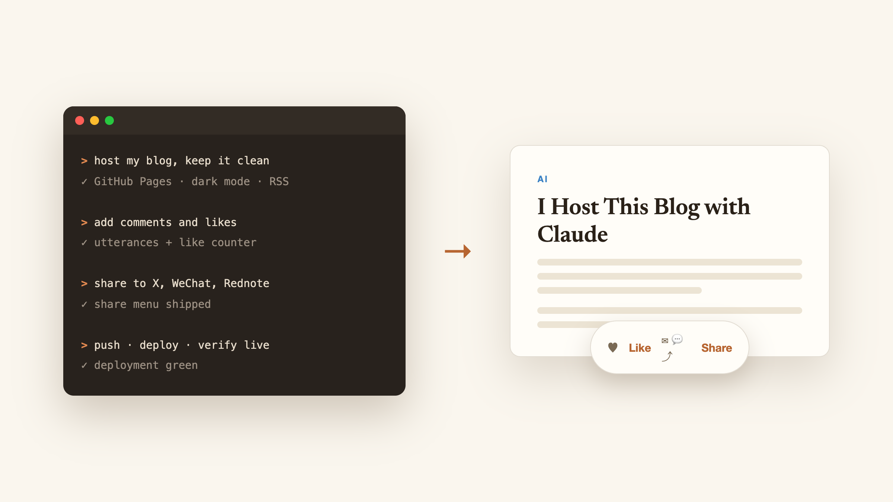
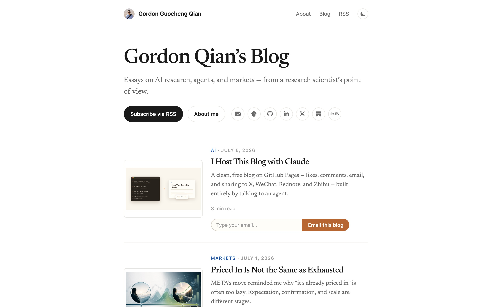
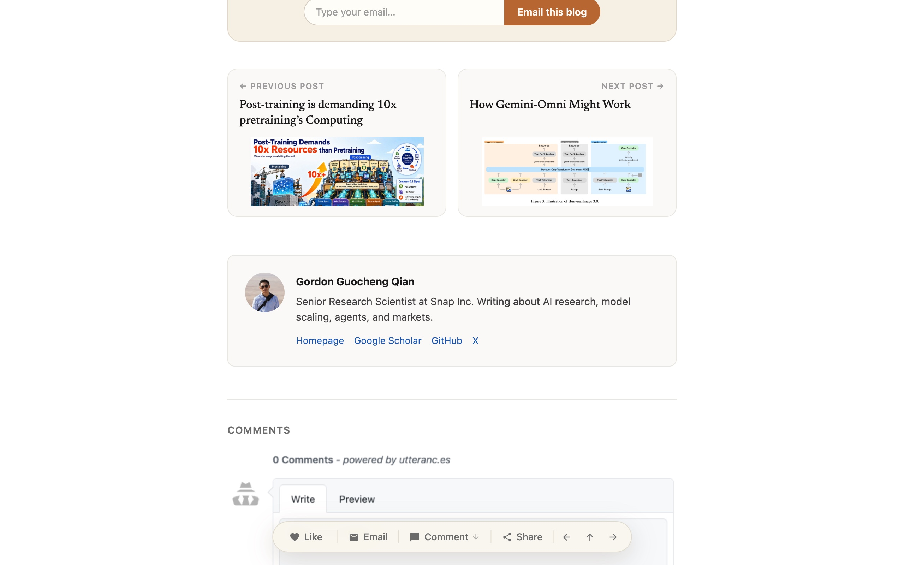
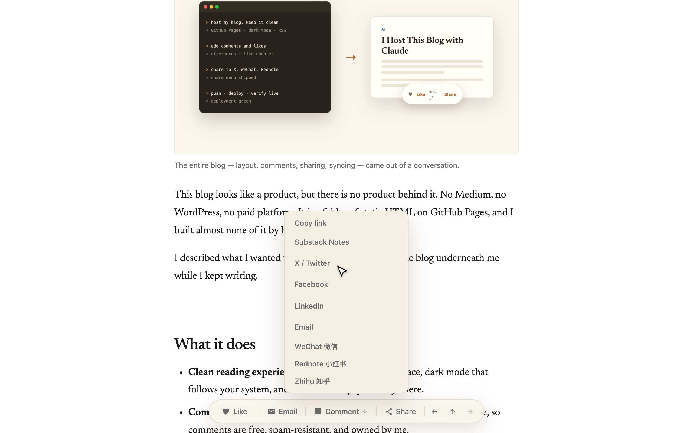
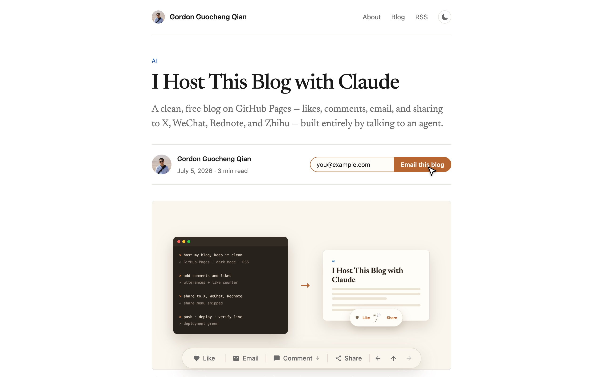

AI
I Host This Blog with Claude
A clean, free blog on GitHub Pages — likes, comments, email, and sharing to X, WeChat, Rednote, and Zhihu — built entirely by talking to an agent.

I described what I wanted to Claude Code, and it built the blog underneath me while I kept writing.

What it does
- Clean reading experience. Static pages, a serif typeface, dark mode that follows your system, and no tracker or paywall anywhere.
- Comments. Powered by utterances — every post maps to a GitHub issue, so comments are free, spam-resistant, and owned by me.
- Likes. A floating action bar with a like counter backed by a free hit-counter API. No accounts, no database.

- Sharing. One Share menu covering X, Facebook, LinkedIn, Substack Notes, email — and, because much of my audience is Chinese, WeChat, Rednote (小红书), and Zhihu, which have no share URLs, so the menu copies a ready-to-paste message instead.

- Email a post. Readers type their address and get the post link composed in their own mail client — no mailing-list service involved.

How it was built
Every feature above started as one casual sentence in a terminal: “add prev/next arrows to the floating bar,” “the bar is not mobile friendly,” “add share to WeChat as well.”
Claude wrote the code, rendered the page in a headless browser to check its own work, took screenshots at phone width, committed, pushed, and then watched the GitHub Pages deployment until the live site served the new version. When a deploy failed on GitHub’s side, it noticed and retriggered the build.
The interesting part is not that an agent can write a blog theme. It is that the whole loop — build, verify, ship, monitor — fits inside a conversation.
Total cost of running this: zero. GitHub Pages hosts it, GitHub issues store the comments, and the like counter is a free public API.
Enjoyed this post? Send it to your email to read later.